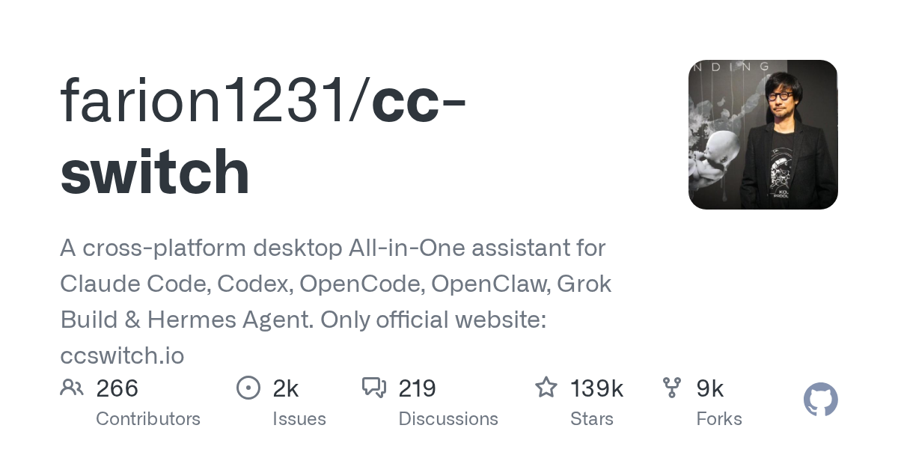

02 GitHub
farion1231/cc-switch
코딩 도구 설정을 한 화면에 모은 앱
★ 138,659이번 주 +3,682RustMIT 사내 사용 가능릴리스 v3.20.4 (09.22)최근 활동 09.29테스트 있음예제 없음AGENTS.md 없음

여러 코딩 도구를 같이 쓰면 설정 관리가 먼저 복잡해진다. 같은 모델을 써도 도구마다 연결 방식과 설정 파일이 다를 수 있다. 이 저장소는 그 번거로움을 줄이려는 데스크톱 앱을 내세운다. 만든 쪽은 여러 도구를 한 화면에서 다룰 수 있다고 밝혔다.
무엇을 하는 물건인가
CC Switch는 여러 코딩 도구의 연결 설정을 한곳에서 바꾸는 데스크톱 앱이다. 만든 쪽은 API 제공자와 MCP모델이 외부 도구와 연결될 때 쓰는 규약, Skills, 프롬프트를 한 화면에서 관리할 수 있다고 밝혔다. 이 도구가 없으면 JSON, TOML, YAML 설정 파일을 도구마다 직접 열어 고쳐야 한다. 클릭 한 번으로 창을 바꿔가며 맞추던 일을 한 책상으로 모아 둔 셈이다.
스펙과 도입 조건
- 언어는 Rust다.
- 설치 형태는 크로스플랫폼 데스크톱 앱으로 소개돼 있다.
- Docker 이미지는 없다.
- 외부 API 키는 필요할 수 있다. 저장소 설명은 여러 API 제공자 전환을 지원한다고 적었다.
- 라이선스는 MIT다.
- 최신 릴리스는 v3.20.4이며 공개 시점은 2026년 9월 22일이다.
- 테스트는 있다.
이럴 때 쓰면 좋다
- 개발팀이 Claude Code와 Codex를 번갈아 시험할 때, 도구별 설정 파일을 직접 고치지 않고 같은 자리에서 연결 대상을 바꾸고 싶을 때 좋다.
- 보안 검토가 끝난 API 제공자로 사내 표준을 바꿀 때, 개인별 수기 설정 대신 공통 화면에서 맞춰 나갈 때 쓸 수 있다.
- 야간 장애 점검 중 특정 코딩 도구 연결이 불안정할 때, 다른 제공자로 빠르게 바꿔 업무를 이어갈 때 유용하다.
핵심 기능
- 여러 코딩 도구의 API 제공자를 클릭 한 번으로 바꾼다.
- MCP를 한곳에서 관리한다.
- Skills와 프롬프트를 한 화면에서 관리한다.
왜 지금 주목받나
여러 코딩 도구를 함께 쓰는 팀이 늘면서 설정 파일을 손으로 맞추는 부담이 커졌다. 이 저장소는 Claude Code, Claude Desktop, Codex, Gemini CLI, Grok Build, OpenCode, OpenClaw, Hermes Agent, Pi, MiniMax Code를 한 관리자 화면에 모았다고 밝혔다. 비슷한 용도의 개별 도구보다 범위가 넓다는 점이 다르다. 사용자는 도구마다 형식이 다른 설정 파일을 직접 편집하지 않아도 된다.
사내 도입 체크
- 외부 API 호출은 있다. 어떤 사업자로 보내는지는 각자 고른 제공자 설정에 달려 있다.
- 데이터 반출 범위는 확인 필요다. 어떤 입력이 외부로 나가는지 설명이 충분하지 않다.
- 유지보수 주체는 확인 필요다. 저장소 설명만으로는 개인인지 조직인지 분명하지 않다.
- 상용 제품 대체 여부는 확인 필요다. 다만 여러 코딩 도구 설정을 통합 관리하는 데스크톱 앱이라는 점은 분명하다.
원문 정보
제목: farion1231/cc-switch
최근 활동: 2026.09.29